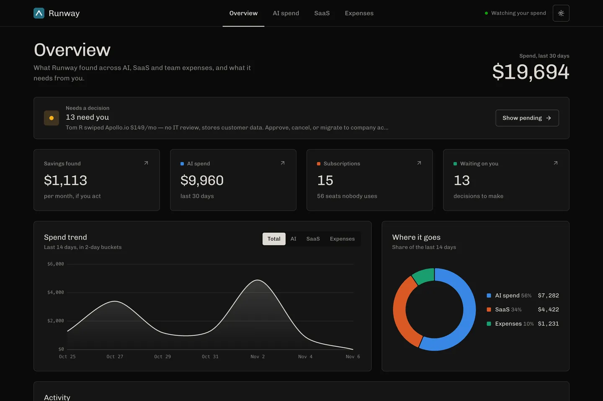
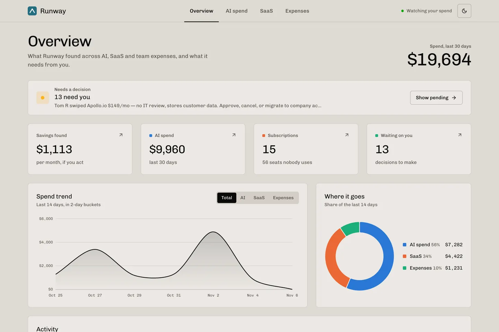
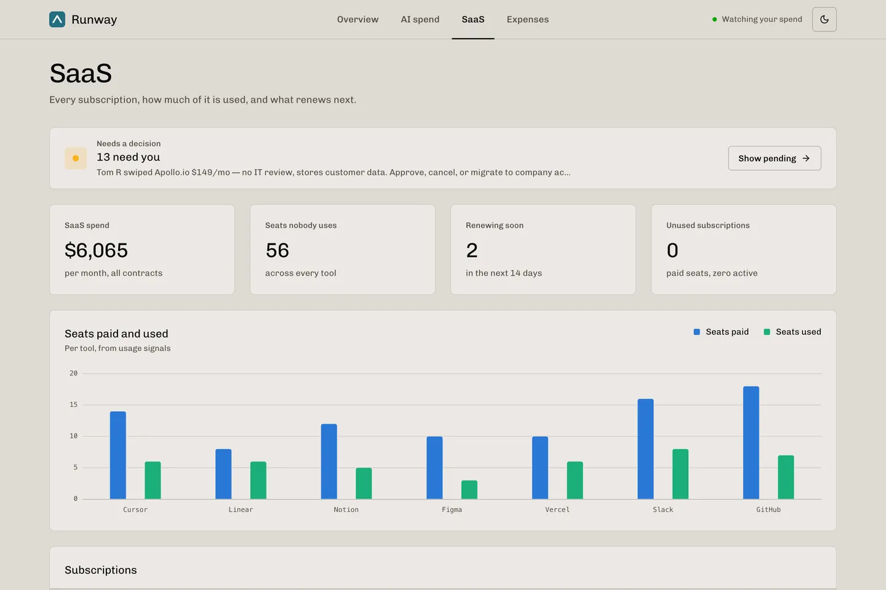
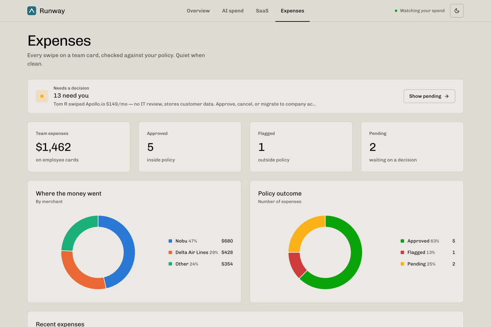

AWS x A10 Hack 2026 · Team of 4
Runway
An AI finance team for early-stage startups, built on AWS. It watches AI, SaaS and card spend, flags waste, and negotiates renewals by email once the founder approves.
Demo video: card swipe, dashboard, iMessage approval and vendor negotiation. Watch on YouTube
What it catches
AI spend
Week-over-week spikes, expensive models doing cheap work, and forgotten batch jobs.
SaaS sprawl
Dormant seats, overlapping tools, unused add-ons and upcoming renewals, which it can then negotiate.
Compliance
Card swipes over the cap, missing memos and red-flag merchants. It asks the employee before bothering the founder.
How it works
- SwipeA card charge or bank-feed transaction hits the API.
- RouteKnown vendors go through fixed rules, and everything else goes to Claude Haiku on Bedrock. Founder policies can auto-approve or auto-cancel.
- AnalyzeA specialist agent for AI spend, SaaS or compliance writes the finding. The code does the maths; the model only writes the words.
- AskThe founder gets an iMessage at the right moment: right away, during business hours, or in the daily digest. A "y" reply approves that one alert and nothing else.
- NegotiateA worker Lambda emails the vendor, reads replies, counters, and texts the founder the result. Negotiation state survives across runs.
My part
I owned the API and the conversation layer. That covered the FastAPI routes and Lambda handlers, the routing that turns a founder's text into an approval, a command ("cancel Notion", "show pending") or a question, and the Node bridge that connects iMessage on a Mac to the backend. I also wired the dashboard to the API and set up CI that runs the tests and scans for committed secrets.
Screenshots




Built with
- Python
- FastAPI
- Pydantic
- Amazon Bedrock (Claude)
- AWS Lambda
- API Gateway
- DynamoDB
- EventBridge
- SES
- AWS SAM
- Node.js
- Vite
- Chart.js
Team
Built with Neil Syal, Shubham Choudhary and shreyassuman2. The repo lives on the team's GitHub.